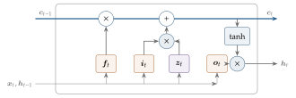
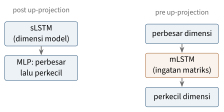

Bab 9
Mengingat: dari RNN ke LSTM dan Transformer
Di semester pertama, kuliah LSTM diberikan langsung oleh Sepp Hochreiter, yang menganalisis masalah vanishing gradient pada 1991 dan bersama Jürgen Schmidhuber menerbitkan LSTM pada 1997. Kuliahnya tidak berhenti di sejarah. Bagian akhirnya membahas xLSTM, versi modern yang dikembangkan di Linz untuk bersaing dengan transformer. Setahun kemudian, kuliah NLP melengkapi sisi lain ceritanya: embedding kata dan model bahasa besar.
Banyak data datang berurutan: kata dalam kalimat, detak jantung, harga saham, langkah waktu sebuah simulasi. Untuk data seperti ini, model harus punya ingatan. Bab ini mengikuti evolusi ingatan buatan, dari jaringan rekuren sederhana yang cepat lupa, ke LSTM yang menjaga ingatan dengan gerbang, ke transformer yang melihat seluruh masa lalu sekaligus, lalu kembali lagi ke ingatan rekuren versi modern.
Jaringan rekuren
Jaringan feed-forward memproses setiap input sendiri-sendiri. Recurrent neural network (RNN) membawa sebuah keadaan tersembunyi \(\boldsymbol{h}_t\) dari satu langkah ke langkah berikutnya: \[\boldsymbol{h}_t=f\big(\boldsymbol{W}\boldsymbol{x}_t+\boldsymbol R\,\boldsymbol{h}_{t-1}+\boldsymbol b\big),\qquad \hat{\boldsymbol{y}}_t=g(\boldsymbol V\boldsymbol{h}_t).\] Matriks \(\boldsymbol R\) adalah bobot rekuren. Bobot yang sama dipakai di setiap langkah waktu, persis seperti kernel konvolusi dipakai di setiap posisi gambar. Saat membaca novel, kita tidak mengingat setiap kata. Kita membawa ringkasan berjalan di kepala: siapa tokohnya, apa masalahnya, apa yang baru saja terjadi. Setiap kalimat baru memperbarui ringkasan itu. Keadaan tersembunyi \(\boldsymbol{h}_t\) adalah ringkasan berjalan tersebut.
Kuliah membahas beberapa varian klasik. Jaringan Jordan mengumpankan kembali keluarannya, jaringan Elman mengumpankan kembali lapisan tersembunyinya, jaringan rekuren penuh menghubungkan semua unit, jaringan NARX memakai input dan keluaran yang tertunda, dan time-delay neural network hanya melihat jendela waktu yang tetap.
Untuk melatih RNN, backpropagation through time (BPTT) membuka jaringan menjadi jaringan feed-forward yang dalam, satu lapisan untuk setiap langkah waktu, lalu menjalankan backprop biasa. Karena bobotnya dipakai bersama, gradien untuk \(\boldsymbol R\) adalah jumlah kontribusi dari semua langkah. Untuk deret yang panjang, BPTT dipotong setelah \(k\) langkah supaya memori dan waktu tetap terbatas. Alternatifnya adalah real-time recurrent learning (RTRL), yang membawa turunan keadaan terhadap semua bobot maju bersama waktu. Gradien tersedia di setiap langkah tanpa menyimpan masa lalu, tetapi harganya mahal: untuk jaringan rekuren penuh dengan \(n\) unit, biayanya tumbuh seperti \(n^4\) per langkah. Dalam bahasa Bab 7, RTRL adalah forward mode, sedangkan BPTT adalah reverse mode.
Gradien yang hilang dan meledak
Masalah berikut mengubah sejarah jaringan saraf. Delta di langkah \(t-k\) bergantung pada delta di langkah \(t\) melalui perkalian \(k\) buah Jacobian: \[\frac{\partial\boldsymbol{h}_t}{\partial\boldsymbol{h}_{t-k}}=\prod_{\tau=t-k+1}^{t}\frac{\partial\boldsymbol{h}_\tau}{\partial\boldsymbol{h}_{\tau-1}} =\prod_{\tau}\mathrm{diag}\big(f'(\boldsymbol s_\tau)\big)\,\boldsymbol R.\] Kalau norma setiap faktor lebih kecil dari satu, hasil kalinya menyusut secara eksponensial. Inilah vanishing gradient. Kalau lebih besar dari satu, ia meledak. Hochreiter menganalisis gejala ini pada 1991 dalam tesis diplomanya (Hochreiter 1991), dan Bengio, Simard, dan Frasconi (1994) menunjukkan secara independen bahwa ketergantungan jangka panjang memang sulit dipelajari dengan gradient descent.
Seberapa cepat gradien hilang? Ambil RNN skalar \(h_t=\tanh(r\,h_{t-1}+w\,x_t)\) dengan \(r=0{,}5\). Karena turunan tanh tidak pernah melebihi satu, setiap langkah mengalikan gradien dengan paling banyak \(0{,}5\). Setelah dua puluh langkah, faktornya paling besar \(0{,}5^{20}\), kurang dari satu per sejuta. Informasi dari dua puluh langkah sebelumnya praktis tidak lagi memengaruhi perubahan bobot. Dengan \(r=1{,}5\) dan unit yang bekerja di daerah linearnya, faktor yang sama bisa mencapai sekitar 3300.
Gradien yang meledak relatif mudah ditangani dengan gradient clipping: kalau norma gradien melewati batas tertentu, skalakan turun. Gradien yang hilang lebih sulit, karena tidak ada sinyal yang bisa diperbesar. Solusinya harus datang dari arsitektur.
LSTM
Hochreiter dan Schmidhuber (1997) memecahkan masalah ini dengan dua gagasan yang di kuliah disebut sebagai inti LSTM: constant error carousel dan gating.
Gagasan pertama sederhana. Bayangkan satu unit ingatan \(c_t\) yang diperbarui dengan penjumlahan, bukan perkalian, yaitu \(c_t=c_{t-1}+(\text{sesuatu yang baru})\). Turunannya \(\partial c_t/\partial c_{t-1}\) bernilai tepat satu. Error yang mengalir mundur lewat \(c\) tidak menyusut dan tidak membesar. Ia berputar tanpa berubah, seperti penumpang di komidi putar.
Penjumlahan tanpa kendali akan mengisi ingatan dengan sampah. Karena itu LSTM memberi gerbang yang dipelajari. Gerbang input memutuskan apa yang boleh masuk, dan gerbang output memutuskan apa yang boleh dibaca. Gerbang lupa (forget gate) ditambahkan kemudian oleh Gers, Schmidhuber, dan Cummins (2000) agar sel bisa mengosongkan dirinya. Versi yang kini dipakai di mana-mana berbentuk \[\begin{aligned} \boldsymbol{z}_t&=\tanh(\boldsymbol{W}_z\boldsymbol{x}_t+\boldsymbol R_z\boldsymbol{h}_{t-1}+\boldsymbol b_z), & \boldsymbol i_t&=\sigma(\boldsymbol{W}_i\boldsymbol{x}_t+\boldsymbol R_i\boldsymbol{h}_{t-1}+\boldsymbol b_i),\\ \boldsymbol f_t&=\sigma(\boldsymbol{W}_f\boldsymbol{x}_t+\boldsymbol R_f\boldsymbol{h}_{t-1}+\boldsymbol b_f), & \boldsymbol o_t&=\sigma(\boldsymbol{W}_o\boldsymbol{x}_t+\boldsymbol R_o\boldsymbol{h}_{t-1}+\boldsymbol b_o),\\ \boldsymbol c_t&=\boldsymbol f_t\odot\boldsymbol c_{t-1}+\boldsymbol i_t\odot\boldsymbol{z}_t, & \boldsymbol{h}_t&=\boldsymbol o_t\odot\tanh(\boldsymbol c_t). \end{aligned}\] Di sini \(\boldsymbol{z}_t\) adalah input sel, \(\boldsymbol i_t\), \(\boldsymbol f_t\), dan \(\boldsymbol o_t\) adalah gerbang input, lupa, dan output, dan \(\boldsymbol c_t\) adalah keadaan sel. Sepanjang jalur sel, \(\partial\boldsymbol c_t/\partial\boldsymbol c_{t-1}=\boldsymbol f_t\). Selama gerbang lupa dekat satu, error mengalir hampir tanpa hambatan, dan jaringan sendiri yang memutuskan kapan harus melupakan. Gambar 9.1 menggambarkan aliran di dalam satu sel.

Satu langkah dengan angka membantu. Misalkan sel skalar menyimpan \(c_{t-1}=2\), dan pada langkah ini gerbang lupa \(f_t=0{,}9\), gerbang input \(i_t=0{,}1\), input sel \(z_t=-1\), dan gerbang output \(o_t=0{,}5\). Keadaan baru \(c_t=0{,}9\cdot2+0{,}1\cdot(-1)=1{,}7\), dan keluaran \(h_t=0{,}5\tanh(1{,}7)\approx0{,}47\). Ingatan berubah sedikit saja. Kalau gerbang lupa tetap \(0{,}9\) selama dua puluh langkah tanpa input baru, sisa ingatan tinggal \(0{,}9^{20}\approx0{,}12\) dari semula, dan gradien sepanjang jalur sel menyusut dengan faktor yang sama. Dengan gerbang lupa \(0{,}99\), sisanya \(0{,}82\). Bandingkan dengan RNN di atas yang menyusut lebih dari sejuta kali dalam dua puluh langkah. Bedanya, faktor susutnya kini dipelajari jaringan sendiri dan bisa dibuat dekat ke satu.
Saya membayangkan keadaan sel sebagai buku catatan. Gerbang input adalah stabilo: hanya hal yang ditandai yang ditulis ke buku. Gerbang lupa adalah penghapus, karena kadang halaman lama perlu dibersihkan. Gerbang output adalah keputusan tentang halaman mana yang dibacakan sekarang. Tulisan di buku tidak memudar dengan sendirinya. Ia hanya berubah kalau ditulis atau dihapus.
Gambaran ini juga membantu menghindari beberapa salah paham. LSTM tidak menghilangkan semua masalah gradien. Jalur sel memang aman, tetapi jalur yang melewati gerbang dan \(\boldsymbol{h}\) masih bisa mengalami vanishing. LSTM membuat belajar jangka panjang menjadi mungkin, bukan otomatis. Bias gerbang lupa juga sering diinisialisasi positif, misalnya satu, supaya di awal pelatihan sel cenderung mengingat. Dan pembagian peran tanh dan sigmoid bukan kebetulan: gerbang memakai sigmoid karena nilainya harus berada di antara nol dan satu, seperti keran, sedangkan input sel memakai tanh karena isinya boleh positif atau negatif.
LSTM mendominasi pemrosesan deret selama dua dekade, dari pengenalan suara di ponsel sampai terjemahan mesin. Kuliah juga menampilkan contoh di luar bahasa, seperti klasifikasi protein dari urutan asam amino dan analisis interval detak jantung.
Attention dan transformer
LSTM memampatkan seluruh masa lalu ke dalam vektor berukuran tetap. Untuk menerjemahkan kalimat yang panjang, pemampatan ini menjadi leher botol. Bahdanau, Cho, dan Bengio (2014) membiarkan dekoder melihat kembali semua keadaan enkoder dan memilih yang relevan. Mekanisme ini disebut attention. Transformer (Vaswani dkk. 2017) kemudian membuang rekurensi sama sekali dan hanya memakai attention: \[\mathrm{Attention}(\boldsymbol Q,\boldsymbol K,\boldsymbol V)=\mathrm{softmax}\!\Big(\frac{\boldsymbol Q\boldsymbol K^\top}{\sqrt{d_k}}\Big)\boldsymbol V, \qquad \boldsymbol Q=\boldsymbol{X}\boldsymbol{W}_Q,\ \boldsymbol K=\boldsymbol{X}\boldsymbol{W}_K,\ \boldsymbol V=\boldsymbol{X}\boldsymbol{W}_V.\] Baris ke-\(i\) hasilnya adalah rata-rata berbobot dari semua value, dengan bobot dari kemiripan query ke-\(i\) dengan setiap key.
Perpustakaan adalah gambaran yang pas. Anda datang dengan sebuah pertanyaan, yaitu query. Setiap buku punya label di punggungnya, yaitu key, dan isi, yaitu value. Anda membandingkan pertanyaan dengan semua label, lalu membaca isi buku dengan perhatian yang sebanding dengan kecocokannya. Buku yang labelnya cocok sekali dibaca serius, yang tidak cocok hanya dilirik. Jawaban Anda adalah campuran dari isi buku-buku itu.
Sebagai contoh kecil, ambil query \(\boldsymbol q=(1,0)\), dua key \(\boldsymbol k_1=(1,0)\) dan \(\boldsymbol k_2=(0,1)\), value \(v_1=10\) dan \(v_2=0\), serta \(d_k=2\). Skornya \(\boldsymbol q\cdot\boldsymbol k_1/\sqrt2\approx0{,}707\) dan \(0\). Softmax mengubahnya menjadi bobot \(0{,}670\) dan \(0{,}330\), karena \(e^{0{,}707}\approx2{,}028\) dibagi \(2{,}028+1\). Keluarannya \(6{,}70\). Pembagian dengan \(\sqrt{d_k}\) menjaga skor tidak terlalu besar saat dimensinya tinggi, supaya softmax tidak jenuh menjadi pilihan tunggal yang keras.
Mengapa tepat \(\sqrt{d_k}\)? Anggap komponen \(q_i\) dan \(k_i\) saling independen dengan rata-rata nol dan varians satu. Hasil kali titik \(\boldsymbol q\cdot\boldsymbol k=\sum_{i=1}^{d_k}q_ik_i\) adalah jumlah \(d_k\) suku yang masing-masing punya rata-rata nol dan varians \(\mathbb{E}[q_i^2]\mathbb{E}[k_i^2]=1\), sehingga variansnya \(d_k\) dan simpangan bakunya \(\sqrt{d_k}\). Untuk \(d_k=64\), skor tipikal berukuran sekitar delapan. Selisih delapan pada input softmax berarti rasio bobot \(e^8\approx3000\), sehingga hampir semua bobot jatuh ke satu kunci dan gradien ke kunci-kunci lain praktis nol. Membagi dengan \(\sqrt{d_k}\) mengembalikan simpangan baku skor ke satu, berapa pun dimensinya.
Satu blok transformer berisi multi-head attention, yaitu beberapa attention paralel dengan proyeksi yang berbeda yang hasilnya digabung, lalu jaringan feed-forward yang bekerja per posisi. Keduanya dibungkus koneksi residual dan layer normalization. Karena attention tidak peduli urutan, informasi posisi ditambahkan lewat positional encoding. Versi asli memakai gelombang sinus dan kosinus dengan frekuensi berbeda untuk setiap dimensi, \(\mathrm{PE}(p,2i)=\sin\big(p/10000^{2i/d}\big)\) dan \(\mathrm{PE}(p,2i+1)=\cos\big(p/10000^{2i/d}\big)\), seperti jarum-jarum jam yang berputar dengan kecepatan berbeda: jarum cepat membedakan posisi yang bersebelahan, jarum lambat membedakan posisi yang berjauhan. Karena \(\sin(a+b)\) dan \(\cos(a+b)\) adalah kombinasi linear dari \(\sin a\) dan \(\cos a\), posisi \(p+k\) bisa diperoleh dari posisi \(p\) dengan sebuah rotasi yang hanya bergantung pada \(k\), sehingga attention mudah mempelajari posisi relatif. Banyak model sekarang memakai gagasan ini secara langsung dengan memutar query dan key menurut posisinya. Untuk model bahasa yang menulis dari kiri ke kanan, sebuah causal mask mencegah setiap posisi melihat masa depan.
Kelebihan transformer adalah semua posisi diproses paralel selama pelatihan, dan dua token mana pun hanya berjarak satu langkah attention. Kekurangannya, yang ditekankan di kuliah, adalah biaya attention yang tumbuh kuadratik terhadap panjang deret, serta keharusan menyimpan key dan value dari semua token sebelumnya ketika model membangkitkan teks.
Ramsauer dkk. (2020), juga dari Linz, menunjukkan bahwa aturan update jaringan Hopfield modern dengan keadaan kontinu, \[\boldsymbol\xi^{\mathrm{baru}}=\boldsymbol{X}\,\mathrm{softmax}\big(\beta\,\boldsymbol{X}^\top\boldsymbol\xi\big),\] sama dengan attention. Kolom-kolom \(\boldsymbol{X}\) adalah pola yang disimpan dan \(\boldsymbol\xi\) adalah query. Biasanya satu langkah update sudah cukup untuk mengambil pola yang paling mirip. Dari sudut pandang ini, attention adalah cara membaca dari sebuah ingatan asosiatif yang kapasitasnya sangat besar.
Dari bahasa ke vektor
Agar bisa masuk ke jaringan rekuren atau transformer, kata harus lebih dulu diubah menjadi vektor. Jalan dari kantong kata, model bahasa \(n\)-gram, dan perplexity, ke word embedding seperti word2vec (Mikolov dkk. 2013) dan GloVe, sampai model bahasa besar seperti BERT (Devlin dkk. 2018) dan GPT (Brown dkk. 2020), dibahas tersendiri di Bab 10. Untuk bab ini cukup satu gambaran: setiap token menjadi vektor padat berdimensi beberapa ratus, kata-kata yang muncul dalam konteks serupa mendapat vektor yang berdekatan, dan deret vektor itulah yang diproses oleh arsitektur-arsitektur di atas.
Rekurensi yang kembali
Biaya kuadratik transformer mendorong pencarian arsitektur dengan biaya linear. State space model memakai rekurensi linear \[\boldsymbol{h}_t=\bar{\boldsymbol{A}}\,\boldsymbol{h}_{t-1}+\bar{\boldsymbol B}\,x_t,\qquad y_t=\boldsymbol C\,\boldsymbol{h}_t,\] yang bisa dihitung paralel justru karena linear. Mamba (Gu dan Dao 2023) membuat \(\bar{\boldsymbol B}\), \(\boldsymbol C\), dan langkah diskretisasinya bergantung pada input, sehingga model bisa memutuskan apa yang disimpan dan apa yang diabaikan, mirip gerbang LSTM. Rekurensi ini tidak lain adalah diskretisasi persamaan diferensial biasa yang linear, \(\dot{\boldsymbol{h}}=\boldsymbol{A}\boldsymbol{h}+\boldsymbol Bx\), sebuah objek yang akan kita temui lagi di Bab 15 dan Bab 31.
xLSTM: LSTM untuk era model bahasa besar
xLSTM: LSTM untuk era model bahasa besar
Kuliah ditutup dengan xLSTM (Beck dkk. 2024), yang dikembangkan di Linz pada 2024. Pertanyaan yang diajukan slide terakhir kuliah sederhana: seberapa jauh LSTM bisa melangkah kalau diperbesar ke miliaran parameter dengan teknik model bahasa modern, dan kalau keterbatasan-keterbatasannya yang sudah dikenal diperbaiki? Slide menyebut tiga keterbatasan itu secara terang-terangan, masing-masing dengan satu tugas uji yang memperlihatkannya.
Tiga keterbatasan LSTM
Keterbatasan pertama adalah ketidakmampuan merevisi keputusan penyimpanan. Tugas ujinya adalah pencarian tetangga terdekat: diberikan sebuah vektor acuan, baca deret vektor satu per satu, dan di akhir deret keluarkan nilai yang melekat pada vektor yang paling mirip dengan acuan. Setiap kali datang vektor yang lebih mirip, isi ingatan harus diganti seluruhnya. Gerbang input sigmoid paling besar bernilai satu, sehingga isi baru paling banyak bisa ditambahkan dengan bobot yang sama dengan isi lama, dan menghapus isi lama membutuhkan gerbang lupa yang tepat nol pada saat yang tepat.
Keterbatasan kedua adalah kapasitas penyimpanan. Satu sel LSTM menyimpan satu skalar. Tugas ujinya adalah prediksi token yang jarang muncul. Slide memperlihatkan perplexity pada Wikitext-103 yang dipisah menurut frekuensi token: token yang jarang tidak bisa dipelajari dari data latih karena terlalu jarang dilihat, sehingga harus diingat dari konteks, dan di situlah LSTM tertinggal. Keterbatasan ketiga adalah pelatihan yang tidak bisa diparalelkan, karena setiap langkah bergantung pada \(\boldsymbol{h}_{t-1}\) melalui bobot rekuren.
sLSTM: exponential gating
Jawaban untuk keterbatasan pertama adalah exponential gating. Gerbang input menjadi \(\boldsymbol i_t=\exp(\tilde{\boldsymbol i}_t)\), sehingga bisa bernilai jauh lebih besar dari satu, dan sebuah keadaan normalisasi mengikuti jumlah semua bobot yang pernah masuk: \[\boldsymbol c_t=\boldsymbol f_t\odot\boldsymbol c_{t-1}+\boldsymbol i_t\odot\boldsymbol{z}_t,\qquad \boldsymbol n_t=\boldsymbol f_t\odot\boldsymbol n_{t-1}+\boldsymbol i_t,\qquad \boldsymbol{h}_t=\boldsymbol o_t\odot\frac{\boldsymbol c_t}{\boldsymbol n_t}.\] Keluaran adalah rata-rata berbobot dari semua input yang pernah disimpan. Contoh dengan angka memperlihatkan efeknya. Misalkan sel menyimpan nilai \(v_1\) dengan bobot satu, jadi \(c=v_1\) dan \(n=1\). Datang vektor yang jauh lebih cocok, dan jaringan memberi \(\tilde i=5\), sehingga \(i=e^5\approx148\), dengan gerbang lupa satu. Maka \(c=v_1+148\,v_2\) dan \(n=149\), dan keluarannya \(c/n\approx0{,}007\,v_1+0{,}993\,v_2\). Isi lama praktis tertimpa tanpa perlu dihapus lebih dulu. Dengan gerbang sigmoid, yang paling besar satu, hasil terbaik dalam situasi yang sama adalah campuran setengah-setengah.
Eksponensial mudah meluap, sehingga xLSTM menambahkan keadaan penstabil \(m_t=\max(\log f_t+m_{t-1},\log i_t)\) dan memakai \(\exp(\tilde i_t-m_t)\) serta \(\exp(\log f_t+m_{t-1}-m_t)\) sebagai pengganti gerbang aslinya. Karena faktor \(e^{-m_t}\) muncul di pembilang dan penyebut \(c_t/n_t\), keluarannya tidak berubah, hanya angkanya tetap dalam rentang yang aman. Varian ini disebut sLSTM. Ia tetap punya koneksi rekuren dari \(\boldsymbol{h}_{t-1}\), yang di slide disebut memory mixing: sel-sel saling memengaruhi lewat bobot rekuren, dibagi menjadi beberapa kepala dengan matriks blok-diagonal. Memory mixing inilah yang membuat sLSTM mampu melacak keadaan, tetapi juga yang membuatnya tidak bisa diparalelkan. Kapasitas ingatannya, menurut slide, sebanding dengan \(m/d\) untuk \(m\) sel dan dimensi tersembunyi \(d\), dan tidak bergantung pada panjang deret.
mLSTM: ingatan berbentuk matriks
Jawaban untuk keterbatasan kedua dan ketiga adalah mLSTM, yang mengganti sel skalar dengan sebuah matriks dan memakai aturan update kovarians: \[\boldsymbol C_t=f_t\,\boldsymbol C_{t-1}+i_t\,\boldsymbol v_t\boldsymbol k_t^\top,\qquad \boldsymbol n_t=f_t\,\boldsymbol n_{t-1}+i_t\,\boldsymbol k_t,\qquad \tilde{\boldsymbol{h}}_t=\frac{\boldsymbol C_t\boldsymbol q_t}{\max\{|\boldsymbol n_t^\top\boldsymbol q_t|,1\}}.\] Bentuknya adalah ingatan asosiatif: setiap langkah menyimpan pasangan key dan value sebagai matriks berpangkat satu, dan membaca berarti mengalikan matriks dengan query. Kalau key yang tersimpan kira-kira saling ortogonal dan ternormalisasi, query yang sama dengan key \(\boldsymbol k_j\) mengambil kembali \(\boldsymbol C\boldsymbol k_j\approx i_j\boldsymbol v_j\), karena sumbangan pasangan lain hampir nol. Slide menyebut kapasitas matriks \(d\times d\) ini sekitar \(0{,}14\,d\) pasangan, angka yang sama dengan kapasitas klasik jaringan Hopfield, dan sekali lagi tidak bergantung pada panjang deret. Tugas ujinya adalah multi-query associative recall: deret berisi pasangan key dan value acak dari kosakata besar, lalu di akhir model ditanya value dari beberapa key sekaligus.
Pada mLSTM, gerbang, key, value, dan query dihitung dari input saja, tidak dari \(\boldsymbol{h}_{t-1}\). Tanpa memory mixing, seluruh deret bisa diproses paralel selama pelatihan seperti attention linear, dan dijalankan secara rekuren saat inferensi. Harganya, mLSTM kehilangan kemampuan melacak keadaan yang dimiliki sLSTM.
Blok, arsitektur, dan hasil
Kedua sel dibungkus dalam blok residual yang berbeda (Gambar 9.2). sLSTM memakai blok post up-projection yang dikenal dari transformer: sel bekerja di dimensi model, lalu jaringan feed-forward memperbesar dan mengecilkan dimensinya. mLSTM memakai blok pre up-projection yang dikenal dari state space model: input diperbesar lebih dulu agar ingatan matriksnya berdimensi tinggi, dengan konvolusi pendek untuk query dan key, aktivasi Swish, gerbang output eksternal, dan koneksi lompat yang dipelajari. Arsitektur xLSTM menumpuk blok-blok ini secara residual, dan notasi xLSTM\([a{:}b]\) menyatakan perbandingan jumlah blok mLSTM terhadap sLSTM.

Hasil yang dilaporkan di slide mencakup empat hal. Pada bahasa formal yang membutuhkan pelacakan keadaan, model dengan sLSTM mampu menyelesaikan tugas yang gagal dikerjakan transformer dan state space model. Pada multi-query associative recall, mLSTM mengingat jauh lebih banyak pasangan dari model rekuren lain. Pada pemodelan bahasa dengan 300 miliar token SlimPajama, xLSTM bersaing dengan transformer dan state space model berukuran sama, dan model 1,3 miliar parameter yang dilatih dengan konteks 2048 token tetap stabil ketika diuji sampai 16 384 token. Kurva hukum penskalaannya (Bab 38) menunjukkan bahwa keunggulan itu bertahan ketika model diperbesar. Slide mencatat bahwa model 2,7 miliar parameter dengan perbandingan \(7{:}1\) masih kurang dilatih, karena konvergensinya awalnya lebih lambat.
Slide juga jujur tentang keterbatasan xLSTM sendiri. Memory mixing membuat sLSTM tidak bisa diparalelkan, dan kernel CUDA cepatnya masih sekitar \(1{,}5\) kali lebih lambat dari mLSTM paralel. Kernel mLSTM saat itu belum dioptimalkan, sekitar empat kali lebih lambat dari FlashAttention atau scan Mamba. Ingatan matriks mahal secara komputasi. Inisialisasi gerbang lupa harus dipilih hati-hati. Kapasitas ingatan terbatas pada \(d\times d\), meski tidak bermasalah sampai konteks 16 ribu token. Dan arsitektur serta hyperparameternya belum dioptimalkan. Rencana yang ditulis di slide penutup adalah membangun model yang lebih besar, mencari bidang penerapan tempat xLSTM unggul, dan menjelajahi gagasan-gagasan yang belum diuji.
Sesudah kuliah
Rencana di slide terakhir itu kemudian berjalan. Vision-LSTM (Alkin, Beck, dkk. 2024) memakai tumpukan blok mLSTM sebagai tulang punggung visi komputer. Gambar dipotong menjadi patch seperti pada vision transformer, dan karena xLSTM membaca dari satu arah, blok ganjil membaca patch baris demi baris dari kiri atas ke kanan bawah, sedangkan blok genap membaca dari kanan bawah ke kiri atas. Biayanya linear terhadap jumlah patch, sehingga menarik untuk gambar beresolusi tinggi seperti citra medis (Bab 25) dan medan simulasi fisika (Bab 30).
xLSTM 7B (Beck dkk. 2025) memperbesar arsitekturnya menjadi model bahasa tujuh miliar parameter dengan optimasi khusus untuk inferensi. Kinerjanya pada tugas-tugas hilir dilaporkan sebanding dengan model lain berukuran sama, dengan inferensi yang lebih cepat dan lebih hemat daripada model berbasis Llama dan Mamba. Alasannya terletak pada struktur yang sudah kita bahas: ingatannya berukuran tetap, sehingga tidak ada cache key dan value yang membengkak seiring panjang konteks. Sifat ini penting justru di era model yang “berpikir” panjang saat menjawab (Bab 38), ketika jumlah token yang dibangkitkan, bukan ukuran model, menjadi biaya utama.
Bidang penerapan lain yang menonjol adalah peramalan deret waktu. TiRex (Auer dkk. 2025) memakai xLSTM sebagai model peramalan zero-shot: nilai-nilai masa lalu sebuah deret dimasukkan sebagai konteks, dan model meramal masa depannya tanpa dilatih ulang untuk deret itu, mirip in-context learning pada model bahasa. Argumen makalahnya menarik benang dari awal bab ini. Transformer dan model rekuren yang bisa diparalelkan unggul dalam in-context learning, tetapi kehilangan kemampuan melacak keadaan, sedangkan LSTM klasik melacak keadaan dengan baik tetapi lemah dalam in-context learning. xLSTM, dengan sLSTM untuk pelacakan keadaan, memberi keduanya. Pada tolok ukur GiftEval dan Chronos-ZS, TiRex dilaporkan mengungguli model peramalan yang jauh lebih besar, baik untuk ramalan jangka pendek maupun jangka panjang.
Deret di luar bahasa
Model deret yang lahir dari bahasa dipakai jauh di luar teks. Kuliah LSTM sendiri sudah menunjukkan klasifikasi protein dari urutan asam amino dan analisis detak jantung. Dalam genomik, urutan DNA dibaca oleh model yang sama dengan model bahasa, dan base calling pada pengurutan nanopore memakai jaringan rekuren untuk mengubah sinyal arus listrik menjadi huruf (Bab 22). Dalam kimia, string SMILES dibangkitkan huruf demi huruf oleh LSTM untuk merancang molekul baru (Bab 23). Dalam sensor yang dikenakan, deret akselerometer dikenali sebagai aktivitas (Bab 20), dan di sistem rekomendasi, urutan lagu yang baru didengar menjadi konteks untuk lagu berikutnya (Bab 34).
Simulasi yang berjalan dalam waktu juga sebuah deret: keadaan medan di langkah \(t\) menentukan keadaan di langkah \(t+1\). Model deret dipakai di sini dengan beberapa cara. Yang paling umum adalah memproyeksikan medan aliran ke beberapa mode POD (Bab 31), lalu membiarkan LSTM atau transformer mempelajari evolusi koefisien mode-mode itu, pendekatan yang dibahas dalam ulasan Brunton, Noack, dan Koumoutsakos (2020). Ingatan juga berguna ketika sensor hanya mengukur sebagian keadaan, karena masa lalu membantu menebak bagian yang tersembunyi. Transformer bahkan tidak harus berjalan sepanjang waktu. Ia bisa memperlakukan titik-titik mesh atau partikel sebagai token. Universal Physics Transformers (Alkin, Fürst, dkk. 2024), dari kelompok riset di Linz, memakai gagasan ini untuk neural operator yang tidak terikat pada grid (Bab 30). Di semua pendekatan itu, masalah yang selalu muncul adalah galat yang menumpuk ketika model menebak berulang-ulang dari tebakannya sendiri. Masalah ini kita bahas di Bab 30.
Catatan sumber.
Bab ini mengikuti slide LSTM and Recurrent Neural Nets dari Sepp Hochreiter (RNN, BPTT, RTRL, vanishing gradient, LSTM, attention, Mamba, xLSTM) dan slide Natural Language Processing (representasi kata, n-gram, embedding, model bahasa besar). Bacaan utama: Hochreiter dan Schmidhuber (1997), Vaswani dkk. (2017), Beck dkk. (2024), dan Gu dan Dao (2023).